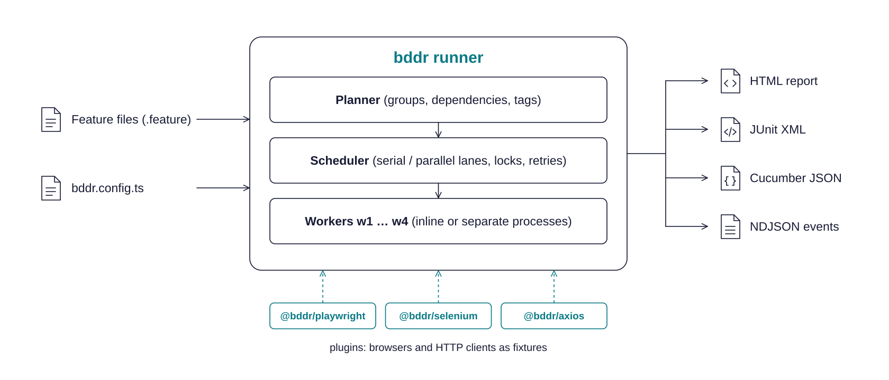
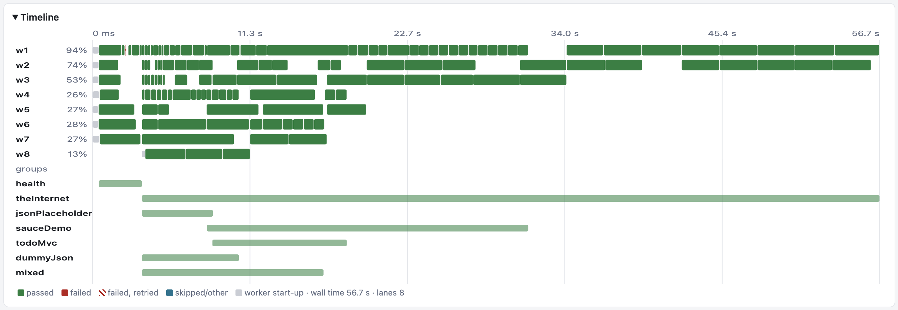

Write it in Gherkin. Run it like a test plan.
bddr is a TypeScript automation framework with BDD-style specs. Feature files describe the behaviour; groups, dependencies, serial and parallel lanes, retries and shards decide how the run goes.
Node.js 20.10 or newer. Browsers and APIs come from plugins, so the runner itself depends on none of them.
Gherkin on top, a scheduler underneath
Feature files stay readable for the whole team. How they run lives in one config file: which scenarios belong together, what waits for what, and how many run at once.
@ui @saucedemo @serial
Feature: Checkout
The scenarios run in file order, in one browser session.
@smoke @id:sign-in
Scenario: Sign in
Given the SauceDemo login page is open
When I sign in as "standard_user"
Then the inventory page is displayed
@dependsOn:sign-in
Scenario: Fill the cart
When I add these products to the cart:
| product |
| Sauce Labs Backpack |
Then the cart badge is 1import { defineConfig } from '@bddr/cli';
import { playwright } from '@bddr/playwright';
export default defineConfig({
plugins: [playwright({ browser: 'chromium' })],
workers: 4,
pool: 'process',
retry: { scenario: 1, on: ['TimeoutError'] },
groups: {
health: { match: '@health', mode: 'serial', priority: -100 },
sauceDemo: {
match: '@saucedemo',
mode: 'serial',
dependsOn: ['health'],
locks: ['saucedemo-standard-user'],
},
api: {
match: '@api',
mode: 'parallel',
workers: 3,
dependsOn: ['health'],
},
},
});--set.What bddr adds
Everything a Cucumber-style runner does, and the orchestration that TestNG users expect.
- Groups
- Collect scenarios by tag and run each group serial, parallel or exclusive, with its own worker cap and time budget.
- Dependencies
- Between groups (
dependsOn) or scenarios (@dependsOn:id). When a dependency fails, what needs it is skipped, not failed. - Serial features
@serialruns one feature's scenarios in file order while other features keep running in parallel.- Retries in layers
- For the run, a group or one scenario (
@retry:2), with delay, backoff, error filters and flaky reporting. - Fixtures
- Steps ask for what they need,
({ page })orinject('api'). Set up once per scenario, feature or worker, torn down after. - Plugins
- Playwright, Selenium and axios are separate packages. bddr itself has no dependency on any of them.
- Processes and shards
--pool processisolates workers;--shard 2/4splits a run across CI machines without breaking groups or dependencies.- Reports
- Console, an HTML report with a worker timeline and run history, JUnit, Cucumber JSON and Messages, and a raw event stream.
- Debugging
--debugpauses at a failing step,--watchreruns on save, andbddr planshows the schedule before anything runs.
How the pieces fit
The runner reads your feature files and config, builds a plan, and hands each scenario to a worker. Plugins give the steps their browsers and HTTP clients.

Plugins for browsers and APIs
Install the plugin next to the tool it wraps, add it to plugins in the config, and its fixtures are available in every step. Several plugins work together in one scenario.
| Playwright@bddr/playwright | A browser per worker, a fresh context and page per scenario, expect assertions, screenshots, traces and video on failure, device emulation, and one shared session for a @serial feature. |
|---|---|
| Selenium@bddr/selenium | A WebDriver session per scenario in Chrome, Firefox, Edge or Safari, open and wait helpers, Selenium Grid through -D server=…, screenshots on failure. |
| axios@bddr/axios | An API client with base URL, headers and auth from the config. Status codes are data, so a 404 is an assertion, not an exception. The calls of a failed scenario are attached to the report, secrets masked. |
What a run leaves behind
Every run writes an HTML report with the worker timeline, failures with screenshots and API call logs, and the history of earlier runs.
